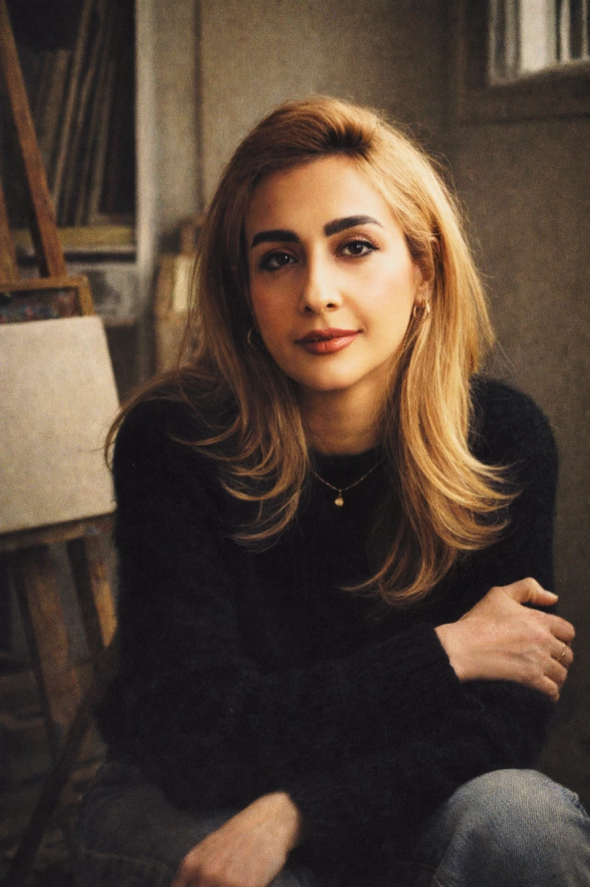

Shahrzad Momenzadeh is an Iranian visual artist based in Türkiye. Her practice bridges Persian miniature traditions, ornamental motifs, and contemporary artistic expressions.
Her work explores narrative, motif, and form, drawing from historical visual languages while engaging with modern concepts and materials. The motifs in her works are inspired by Persian calligraphy and Iranian illumination (tazhib).
Shahrzad's practice includes Persian miniature, contemporary painting, and motif-based works, with a strong focus on visual storytelling and cultural memory.

My artistic practice is shaped by a dynamic dialogue between Persian miniature traditions and contemporary visual language. In my work, the past is not treated as something fixed or distant, but as a living memory—one that can be revisited, transformed, and reimagined within the present. Drawing from the visual structures, narrative qualities, and aesthetic principles of Persian miniature painting, I reinterpret these elements through a personal and contemporary perspective.
Influenced by Persian calligraphy and Iranian illumination (tazhib), my work explores the relationship between tradition and contemporaneity through composition, detail, and visual rhythm. Rather than reproducing historical forms, I engage with them conceptually, using the language of contemporary painting to reflect on memory, continuity, and transformation, and to question how cultural heritage can be reactivated within the present.